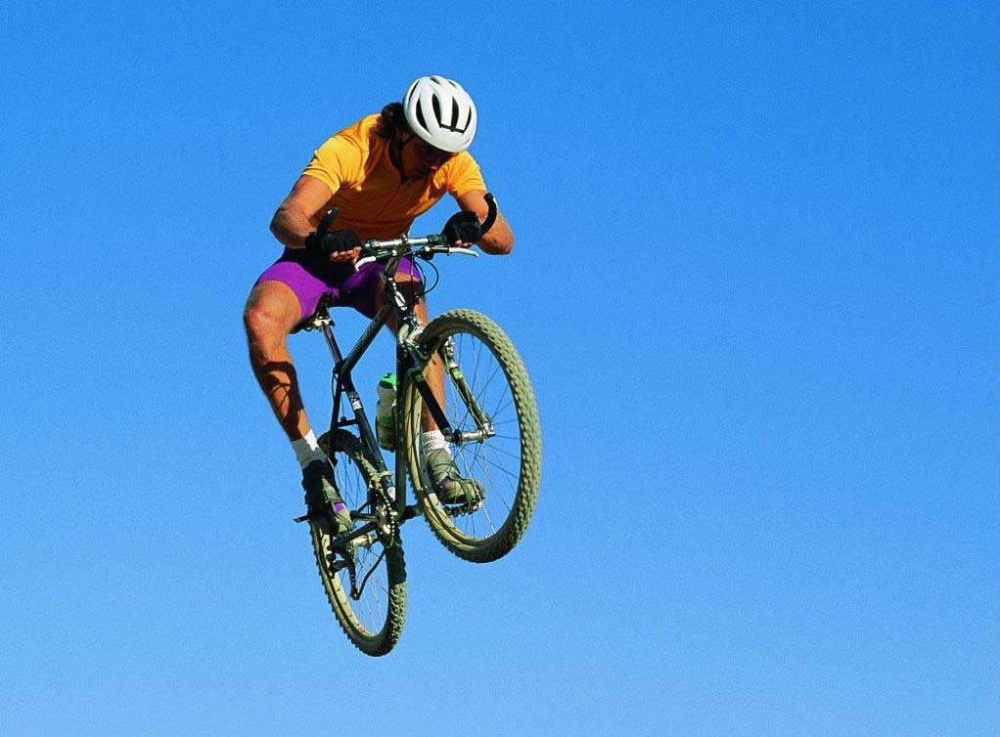
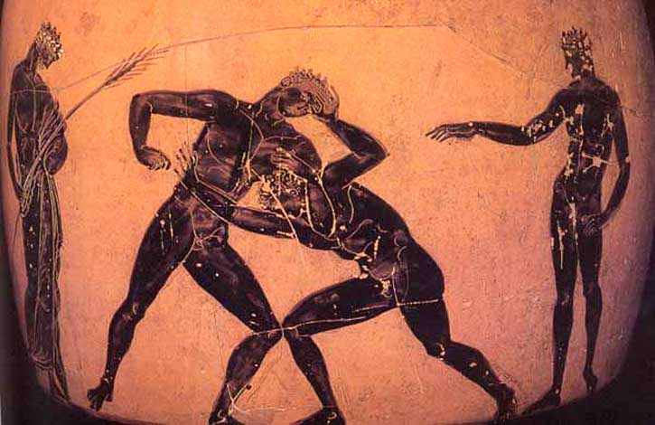
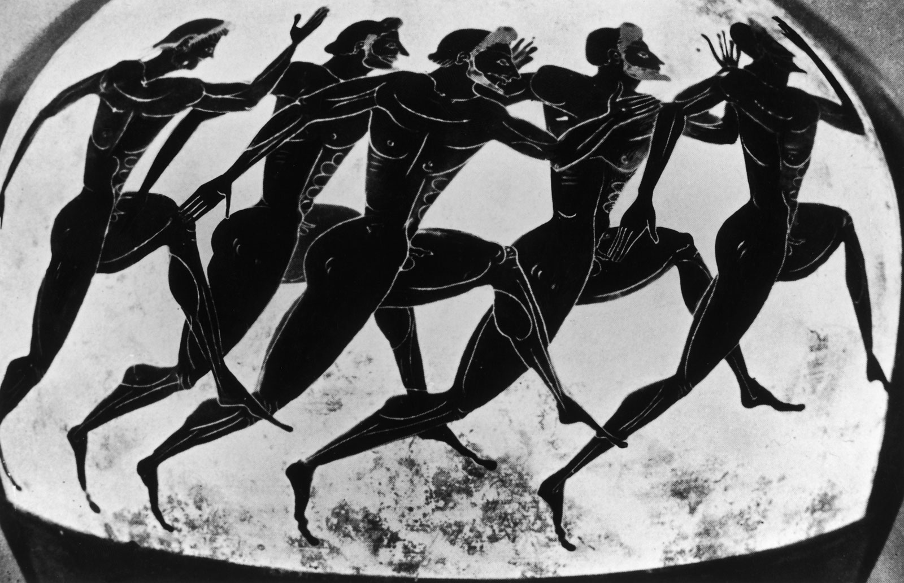

Sport
Sport - organized by certain rules of human activity, consisting in the comparison their physical or intellectual abilities, as well as training for this activity and interpersonal relations arising in its process.
Sport is a specific kind of physical and intellectual activity, committed for the purpose of competition, as well as targeted training to them through warm-up exercises. In combination with rest, aspiration of gradual improvement of physical health, increase the level of intelligence, getting moral satisfaction, commitment to excellence, improve personal, group and absolute records, fame, improve their own physical abilities and skills, the sport is designed to improve physical and mental characteristics of a person.
Sport - an integral part of physical culture. This is actually a competitive activity and preparation for it. It's bright the desire to win, achieve high results, mobilization is manifested physical, mental and moral qualities of a person. Sport is necessary for that, to influence society.
Mass sport gives an opportunity to millions of people to improve their physical qualities and motor abilities, to strengthen health and prolong creative longevity.
Sport in Russia - one of the most popular type of activity. Sports are professional and Amateur. Amateur sport is closely related to the concept of physical education. Many Russian sports schools are leading in the world. The proof of that-high achievements on the most prestigious sporting events such as the Olympic games, world Championships and Europe in various sports. Many Russian athletes are global sports star.
As of 2008, there were 2,687 stadiums in Russia with stands for 1500 seats and more, 3762 swimming pools, 123.2 thousand plane sports facilities.In 2008 number of participants in sports sections and groups it was 22.6 million people, including 8.1 million women.
History
Many examples of cave art discovered today, contain images of ritual ceremonial scenes. Although, that the actions depicted in these images cannot be attributed solely to the modern concept of sports, yet we can conclude that even then there were classes and rituals, reminiscent of sports activities. This image, located in France, Africa and Australia, were made 30,000 years ago. in Mongolia the rock image of the encircled mountains, Dating from the seventh Millennium BC, was discovered crowd of wrestlers. Cave paintings, discovered in Japan, depict the fights in the sumo style appears to be related to agricultural religious rituals.
There are objects and buildings , indicating that there were activities in China, suitable for the modern definition of sport, already 4 000 years before our era. Apparently, gymnastics was a popular sport in ancient China. In the 1st Millennium BC among the common people was popular "Zhu ke" is a team game of ball, in which there were up to 70 types strikes and up to 10 types of violations.
Sumerian civilization has left a number of archaeologists artifacts showing the popularity of wrestling in Mesopotamia, including stone bas-reliefs about five thousand years ago and bronze the statue of khafaji depicting wrestlers, Dating from about 2600 years before ad to the same period include pictorial images of wrestlers in ancient Egyptian the tombs of Beni-Hassan, showing that 4.5 thousand years ago in the fight was used most modern grabs.
In Central America has developed Mesoamerican ball game, including the Olmec people-already in the XIV century BC - eh.. There were different types of games in which it was allowed to hit the ball with different parts of the body or putter found playgrounds with fortified at different ends on the big the height of the rings indicate the possible existence of a semblance of modern basketball. The ball game was used by the peoples of America to resolve contentious issues (including disputes over territory) and often had a ritual character, especially in times of the flowering of Mayan culture; defeat in the game could result in death for the losers, who were sacrificed.
In Ancient Greece, there was already a great variety sport. The greatest development received various types of wrestling, running, discus throwing and chariot races. Judging by this list, military culture and military art were directly related to sports in Ancient Greece (and not only there). There same every four since 776 BC, the Olympic games have been held - in a small village in The Peloponnese called Olympia.
In addition to the Olympic games, which were the oldest common all Greece sports festival, inter-state has been established in VI . B.C. Pythian, Nemean and Isthmian games. Later, during the Roman period domination over Greece, to large-scale sporting events added established by Octavian Akcijska games and Domitian instituted the Capitoline games, however, in the Roman period as a whole sport ceased to be mass.

Morozov I.S. EVT-16bzu